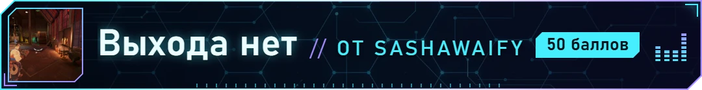
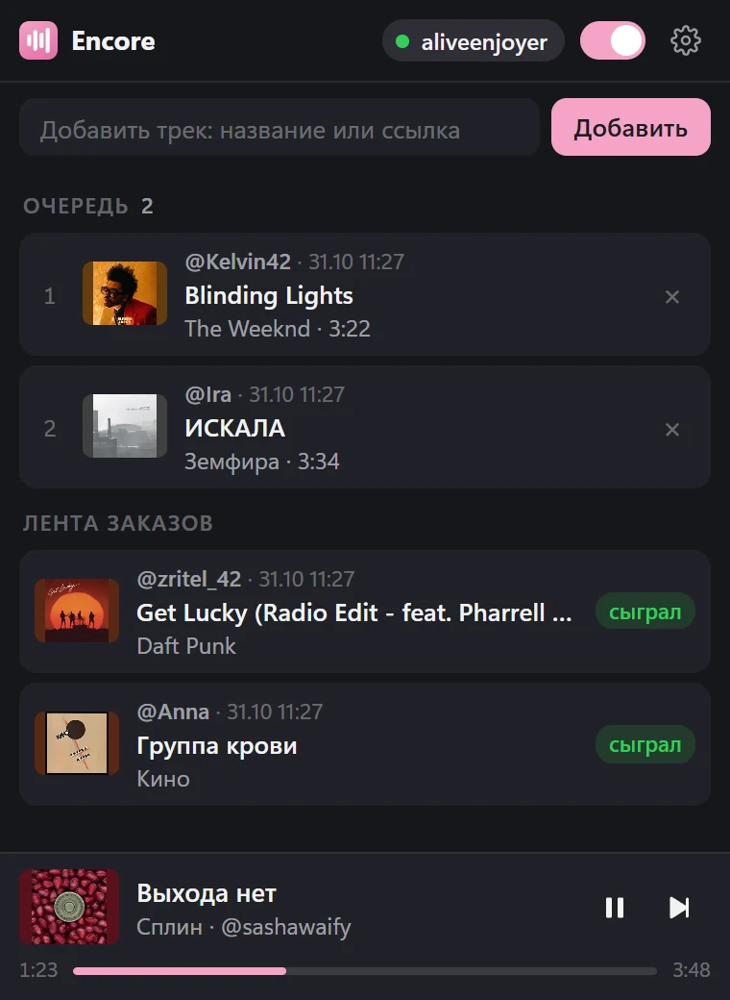
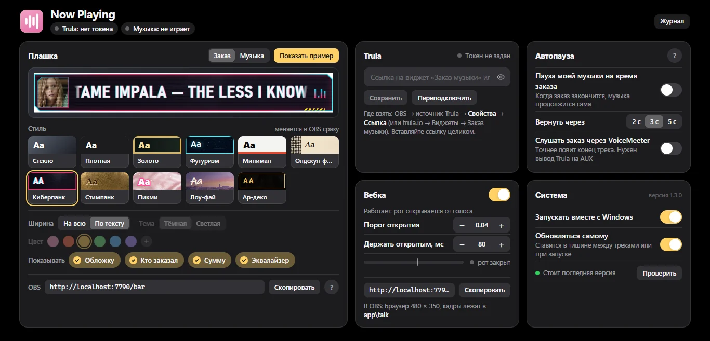

Заказы за баллы, плашка для OBS и автопауза
Музыка сама знает, когда помолчать.
Зрители заказывают треки за баллы канала, плашка показывает, что играет, а твоя музыка встаёт на паузу, пока звучит заказ. Поставил один раз и забыл.
- Бесплатно
- Windows 10 и 11
- Меньше 1 МБ
- Версия 1.4.1
Плашка под твой стрим.
Одиннадцать стилей, от минимала до киберпанка. У каждого свои картинки, шрифт и анимация. Переключаешь в настройках, OBS подхватывает за секунду.
Зритель заказал трек. Твоя музыка подождёт.
Заказы за баллы канала прямо в Encore или через Trula. Никаких двух песен поверх друг друга и ручных пауз посреди катки.
- Заказ пришёлЗритель заказал трек за баллы канала или в Trula, или прислал донат в Trula. Твой YouTube Music, Spotify или любой плеер Windows встаёт на паузу сам.
- Заказ на плашкеНазвание, кто заказал и сколько отдал: баллы или рубли. В том же стиле, что и твоя музыка.
- Музыка вернуласьТрек доиграл, и твоя музыка продолжается с того же места. Через 2, 3 или 5 секунд, как скажешь.

Заказ треков за баллы канала
Без Trula и без донатов. Подключаешь Twitch в один клик, и Encore сама заводит на канале две награды. Треки играют прямо в плашке, звук идёт через OBS.
- Зритель пишет название или кидает ссылку: YouTube, YouTube Music, Spotify, SoundCloud. Короткие ссылки из кнопки «Поделиться» тоже подходят
- Трек SoundCloud играет прямо с SoundCloud: зритель слышит ту самую запись, а не похожую с YouTube
- Лимиты твои: длина трека, просмотры, сколько треков от одного зрителя (по умолчанию 30, на тебя не действует), длина очереди и чёрный список слов
- Сыгранный заказ остаётся в очереди наград на Twitch: оттуда баллы можно вернуть вручную. Не подошёл, убран из очереди или не сыграл, и баллы вернутся сами
- Настройка «Оставлять заказы на Twitch» выключается: тогда Encore сама отмечает сыгранные заказы выполненными
- Названия и цены наград меняешь в настройках или прямо на Twitch: Encore запомнит и не сбросит
- Зритель пишет в чат !треки или !очередь, и Encore отвечает, что играет и что ждёт в очереди
Заказы под рукой, прямо в OBS.
Панель Encore встаёт в OBS рядом с чатом. Видно, что играет, кто что заказал и что ждёт в очереди. А если заказали ерунду, хватит одной кнопки.
- ⛔ рядом с треком: трек убирается, а этот зритель 10 минут не может заказывать. Баллы за мусор сами не вернутся
- Кто в тайм-ауте, видно над очередью, крестик снимает раньше. Время меняешь в настройках
- Убрал трек из очереди крестиком, и зрителю вернутся баллы
- Пауза, пропуск и перемотка трека, который играет. Пауза и для твоей музыки, когда заказов нет
- Лента прошлых заказов: «В очередь» ставит понравившийся трек ещё раз
- Добавить трек самому, включить или выключить приём заказов
- Шестерёнка открывает все настройки прямо в панели
«Док-панели» → «Пользовательские док-панели браузера» (Docks → Custom Browser Docks), адрес:
http://localhost:7790/dock

Все настройки на одном экране.
Стиль, заказы и очередь, автопауза, говорящая вебка и обновления. Ничего не надо искать по вкладкам, а очередь заказов есть ещё и в панели прямо в OBS.

- Обновляется самаНовая версия ставится в тишине между треками. Плашка в OBS перезагружается сама.
- Всё на твоём компьютереРаботает на localhost. Вход в Twitch и токен Trula хранятся только у тебя.
- Бонус: говорящая вебкаДве картинки, и твой аватар открывает рот, когда ты говоришь.
Три шага, и ты в эфире.
- Скачай и запустиРаспакуй папку Encore из архива целиком и запусти Encore.exe. Если Windows ругается, «Подробнее» → «Выполнить в любом случае».
- Подключи Twitch и выбери стильНастройки откроются сами. В карточке «Заказы» нажми «Подключить»: откроется Twitch с уже вписанным кодом, останется нажать «Активировать». Заказы идут через Trula? Вставь ссылку на её виджет во вкладке «Trula».
- Добавь Encore в OBSОдин источник «Браузер» (Browser): ширина 720, высота 296, галочка «Управление аудио через OBS» (Control audio via OBS).
http://localhost:7790/playerПотом Ctrl+E и «Обрезать снизу» (Crop, Bottom): 200. Там плеер заказов, на стриме видна только плашка. Панель с очередью: «Док-панели» → «Пользовательские док-панели браузера» (Docks → Custom Browser Docks).http://localhost:7790/dock
Настрой OBS, и игра не просядет.
Самому Encore на заказ хватает пары десятков миллисекунд. Тяжело бывает браузеру OBS, когда он запускает видео YouTube. Поэтому с версии 1.5.7 плеер грузится заранее, когда OBS открывает источник, а не посреди игры. Если в момент заказа FPS всё равно проседает, проверь это:
- Ускорение браузера«Настройки» → «Расширенные» → блок «Источники» → «Включить аппаратное ускорение для источника „Браузер“» (Settings → Advanced → Sources → Enable Browser Source Hardware Acceleration), потом перезапусти OBS. Без него видео YouTube считает процессор.
- Кодировщик видеокарты«Настройки» → «Вывод» → «Кодировщик видео»: NVIDIA NVENC, AMD или QuickSync вместо «Программный (x264)» (Settings → Output → Video Encoder). Процессор остаётся игре.
- 30 кадров у EncoreВ свойствах источника Encore включи «Использовать настраиваемую частоту кадров» и поставь 30 (Use custom frame rate). Плашке больше не нужно.
- Не выгружать источникТам же сними «Отключать источник, когда не видим» и «Обновить браузер, когда сцена становится активной» (Shutdown source when not visible, Refresh browser when scene becomes active). Иначе плеер YouTube грузится заново после каждой смены сцены.
- Запас для игрыОграничь FPS в самой игре чуть ниже того, что она выдаёт. Если видеокарта загружена на 99 %, любая работа OBS отнимает кадры и у игры, и у стрима.
- Где смотреть«Вид» → «Статистика» (View → Stats). Растёт «Пропуск кадров (рендеринг)» — не хватает видеокарты, «Пропуск кадров (кодирование)» — процессора или кодировщика.